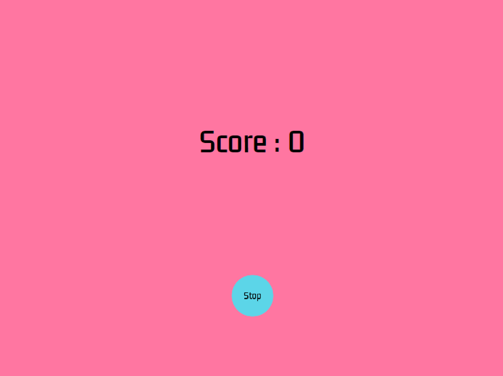
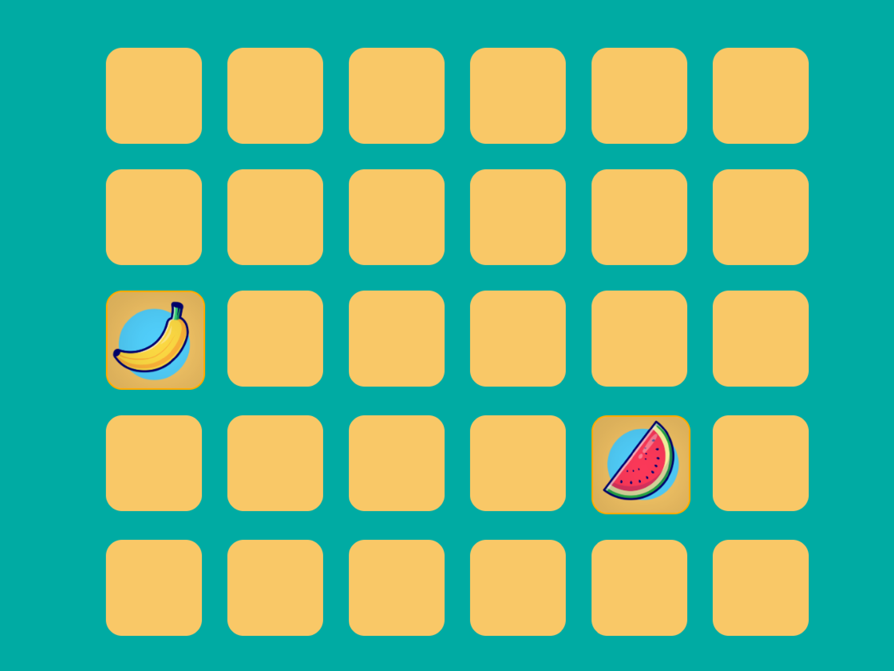
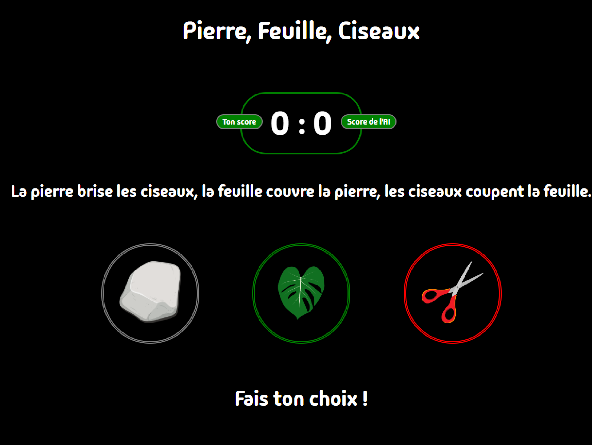
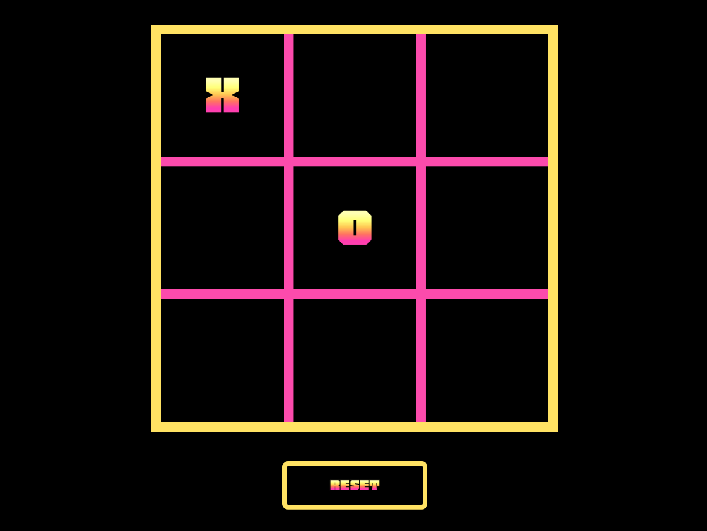

Petits jeux divers en HTML, CSS et JS

Color Game
But du jeu: clique sur le buton quand les couleurs sont identiques!
- Gestion du score
- Gestion de l'interface
- Minuterie

Memory Game
But du jeu: retrouve les paires de cartes!
- Mélange aléatoire des cartes
- Mémorisation des paires
- Comparaison des cartes retournées

Pierre Feuille Ciseaux
But du jeu: la pierre brise les ciseaux, les ciseaux coupent la feuille, la feuille couvre la pierre!
- Détection des règles de victoire
- Génération aléatoire du choix de l’ordinateur
- Mise à jour et affichage du score

Tic Tac Toe
But du jeu: faire une ligne complète de X ou de O !
- Détection des combinaisons gagnantes
- Gestion des tours des joueurs
- Vérification d’égalité (match nul)